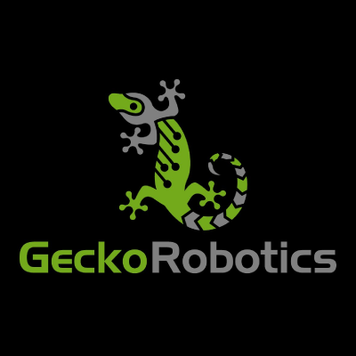
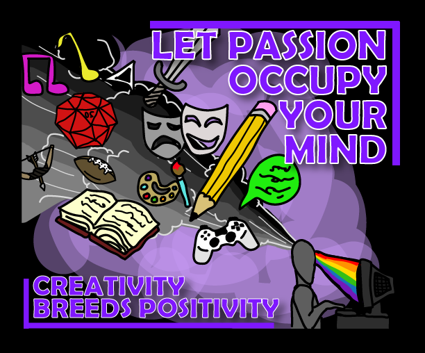
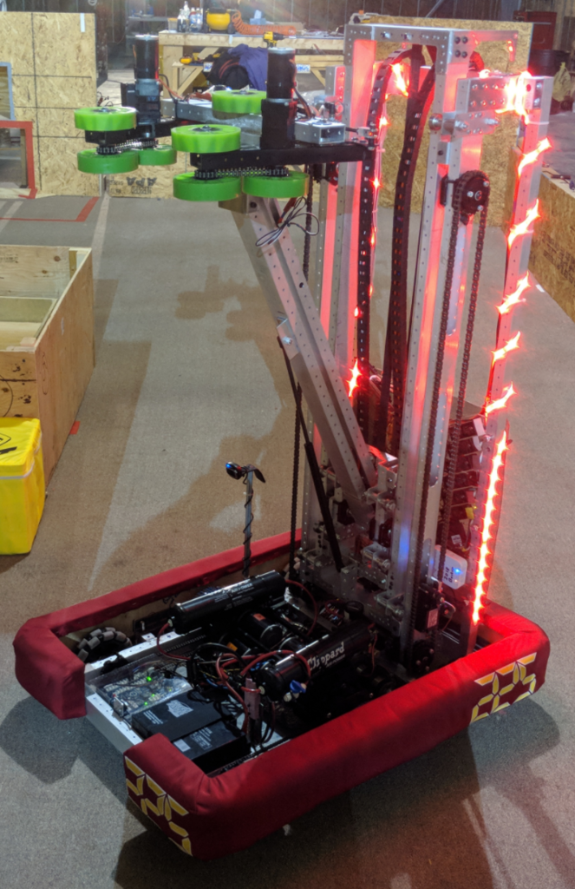
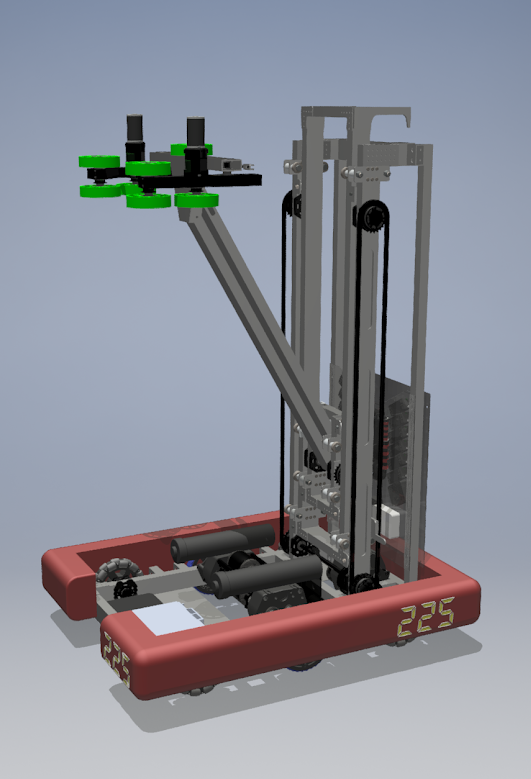
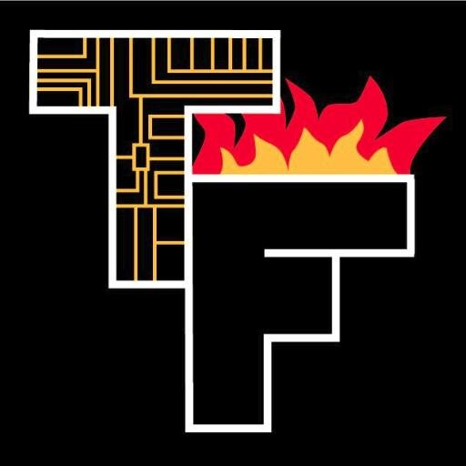

Jagr Krtanjek
Sophomore at the University of Pittsburgh Honors College. Excited about technology and creative storytelling, especially ways to combine them...
Education
- B.S. Computer Science, University of Pittsburgh, 08/2019-05/2023. GPA: 3.90
- B.S. Digital Narrative and Interactive Technology, University of Pittsburgh, 08/2019-05/2023, GPA: 3.90
Objective
- I am a passionate problem solver with experience in robotics, application design, web development, who loves to tell stories with my technical skills. I pride myself on my creativity and capacity to use my technical skills to make new and exciting things. I am seeking a software intership position for the 2021 summer.
University of Pittsburgh - Undergraduate Teaching Assistant
08/2020 - Present
> Develop lesson plans to teach students each week labs for the Intermediate Programming in Java class. Tutor students in one on one setting, utilizing debugging skills.
> Actively watch communication channels to coordinate with supervisor and respond to student questions.

Gecko Robotics - Software Engineering Intern
05/2020 - 08/2020
> Developed a dashboard to facilitate SQL database archiving and recovery using Flask, React, PostgreSQL, and the Google Cloud Platform.
> Active in responding quickly and xing bugs in the production deployment when occurring.
York County History Center - Programming Consultant
06/2019 - 08/2019
> Did extensive research into the WWII "York Plan" initiative in the center’s archives.
> Compiled data collected on industry involved in the initiative and developed an interactive story map hosted on their website.
Pennair Pneumatics & Hydraulics - Summer Intern
06/2018 - 08/2018
> Led a team of interns to integrate a Siemens safety controller with an ABB industrial robot, incorporating area scanners.
> Programmed using robot studio software. Programmed demos and incorporated the safety controller over Pro net.
SteelHacks 2020, 3rd Place
Recycle Rewards, Prototype Lead (2020)
// ARDUINO CODE FOR SMART RECYCLER
// Sets the display screen up
Adafruit_SSD1306 display(SCREEN_WIDTH, SCREEN_HEIGHT, &Wire, OLED_RESET);
char letters[26] = {'a', 'b', 'c', 'd', 'e', 'f','g', 'h', 'i', 'j', 'k', 'l', 'm', 'n', 'o', 'p', 'q', 'r', 's', 't', 'u', 'v', 'w', 'x', 'y', 'z'};
char scanMe[21] = {'S','c','a','n',' ','m','e',' ','f','o','r',' ','R','e','w','a','r','d','s','!'};
// setup code: code to run once
void setup() {
// SSD1306_SWITCHCAPVCC = generate display voltage from 3.3V internally
if(!display.begin(SSD1306_SWITCHCAPVCC, 0x3C)) { // Address 0x3C for 128x32
Serial.println(F("SSD1306 allocation failed"));
for(;;); // Don't proceed, loop forever
}
// Set the digital pins to recieve input from ultrasonic sensor
pinMode(trigPin, OUTPUT);
pinMode(echoPin, INPUT);
Serial.begin(9600);
}
// loop code: code to run in a loop while recycler is operating
void loop() {
// Draws the "Recycle Rewards" Logo and invert the colors
display.clearDisplay();
display.invertDisplay(true);
drawIcon();
display.display();
// Sending a pulse to the trigger pin to poll the ultrasonic sensor
digitalWrite(trigPin, LOW);
delayMicroseconds(2);
digitalWrite(trigPin, HIGH);
delayMicroseconds(10);
// recieves signal from ultrasonic and translates into distance in (cm)
duration = pulseIn(echoPin, HIGH);
distance = duration *0.034/2;
// testing print
Serial.println(distance);
// if something has dropped in the recycler
if (distance < 10){
// clear the display
display.clearDisplay();
// generates a psuedo-random number using a fluctuating empty analog input
randomSeed(analogRead(0));
// declares a char[] that is stored with a random string of 8 letters
char buf[10];
for(int i = 0; i < 8; i++){
buf[i] = letters[random(0,26)];
}
// the point value associated with recycling is appended to the end of the string
buf[8] = '5';
buf[9] = '0';
// declares qrcode object from library, and encodes buf[] into a byte array
// corresponding to the qr code it encodes
QRCode qrcode;
uint8_t qrcodeData[qrcode_getBufferSize(3)];
qrcode_initText(&qrcode, qrcodeData, 3, 0, buf);
// clear display before drawing qrcode and message
display.clearDisplay();
// for each byte / pixel that is in the encoded byte array, generate a
// rectangle of the proper size at the proper location
for (uint8_t y = 0; y < qrcode.size; y++) {
// Each horizontal module
for (uint8_t x = 0; x < qrcode.size; x++) {
if(qrcode_getModule(&qrcode, x, y)) {
display.fillRect(42+(x*1.5), 18+(y*1.5), 2, 2, SSD1306_WHITE);
}
}
}
// draws "Scan me for Rewards!" message at the top of the screen
display.setTextSize(1);
display.setTextColor(WHITE);
display.setCursor(31, 0);
display.println("Scan me for");
display.setCursor(42, 7);
display.println("Rewards!");
display.display();
// wait 20 seconds so that the user has time to scan the qrcode
delay(20000);
}
}
// function to draw image from byte array
void drawIcon(void) {
display.drawBitmap(0,0,icon, 128, 64, 1);
display.display();
}
Games4SocialImpact Game Jam, 2nd Place
HailToTheChief, Lead Artist and Developer (2020)

//Political Literacy Game made in Swing/JFrame
public static void main(final String[] args) {
SwingUtilities.invokeLater(new Runnable() {
@Override
public void run() {
StartView start = new StartView();
frame = new JFrame("Hail To The Chief");
frame.setContentPane(start);
frame.pack();
frame.setDefaultCloseOperation(JFrame.EXIT_ON_CLOSE);
frame.setVisible(true);
}
});
}
FIRST Robotics Competition Team, TechFire 225
Lead Programmer, Robot: Fire&Ice (2019)
// Computer Vision Vector Detection IMPLEMENTED FOR AUTONOMOUS NAVIGATION
public double getAngleError(){
double angle;
sendRequest(CHECKSUM_GETMAINFEATURES);
if (vectorDetected){
if (localCache[9] < localCache[11]){
angle = (constants.x1_offset - localCache[8]) * constants.degrees_per_unit;
System.out.println("x1: " + localCache[8]);
}
else {
angle = (constants.x1_offset - localCache[10]) * constants.degrees_per_unit;
System.out.println("x1: " + localCache[10]);
}
return -angle;
}
else {
return -225.0;
}
}
// TrapezoidalMotionProfile + State machine IMPLEMENTED FOR ELEVATOR CONTROL
public void holdPosition() {
holdPosition = elevatorMotor.getEncoder().getPosition();
currentMode = Mode.HOLD;
}
public void goToGoal(double goal) {
profileOffset = elevatorMotor.getEncoder().getPosition();
profile = new TrapezoidalMotionProfile(goal-profileOffset, constants.ElevatorMaxVelocity, constants.ElevatorMaxAccel);
profileTimer.reset();
profileTimer.start();
currentMode = Mode.PROFILE;
}
FIRST Robotics Competition Team, TechFire 225
Lead Programmer, Robot: SpitFire (2018)
// Sigmoid function IMPLEMENTED FOR ARM CONTROL
public double computeSigmoid(double setpoint) {
double actual = fourbar.getSelectedSensorPosition(0);
double error = setpoint - actual;
//sigmoidGain constant does not work here, output becomes too low
double output = (Math.tanh((error)*constants.armSigmoidGain));
output = clamp(output, -1, 1);
//System.out.println("Error Arm: "+error);
//System.out.println("Output Arm: "+output);
if (output > 0){
//Negative output because negative output is up on the arm
return -output+constants.armAntiGravity;
}
return -output;
}
// TrapezoidalMotionProfile IMPLEMENTED FOR ELEVATOR CONTROL
public void setPreset(Preset preset){
this.preset = preset;
if ( preset == Preset.GROUND_HIGH ) {
profileStartLocation = getHeightInches();
//System.out.println("starting from "+profileStartLocation);
//System.out.println("going to "+constants.groundSet);
//System.out.println("need to go to "+(constants.groundSet-profileStartLocation));
runningProfile = new TrapezoidalMotionProfile(constants.groundSet-profileStartLocation,
constants.elevatorVelocityLimit, constants.elevatorVelocityLimit);
profileTimer.reset();
profileTimer.start();
}
}
ENGCMP0610 - Visual Argument
Original Artist (2020)
HailToTheCheif - Political Literacy Game
Original Artist (2020)


FIRST Robotics Competition Team, TechFire 225
CAD Designer (2015-2018), Avatar Design (2018)
  